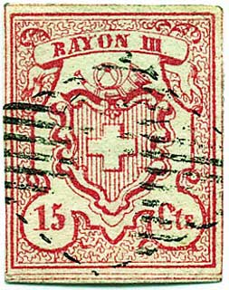
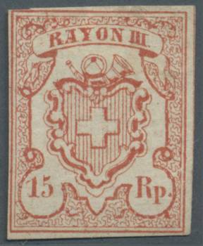
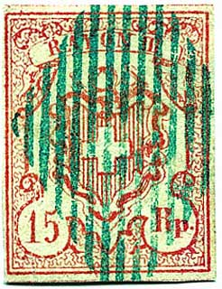
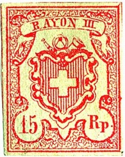

{kind=link}

(Rayon III, small '15 Rp.' and '15 Cts', Type 10, enlarged sizes)
Return To Catalogue - Switzerland overview - Issues of 1850-1853 - Types of 'POSTE LOCALE' and 'ORTSPOST' - Types of Rayon I
Note: on my website many of the
pictures can not be seen! They are of course present in the
catalogue;
contact me if you want to purchase the catalogue.
The 'Ortspost', 'Poste Locale', 'Rayon I' and 'Rayon II' exist in 40 types (8 vertical rows of 5 stamps), each with position of letters and a different background pattern for each type. The 'Rayon III' stamps exist in 10 different types each.
For the types of the 'POSTE LOCALE', 'ORTSPOST' issues click here. For the Rayon I issue click here.
The 'small 15' Rayon III issue were made from the plates of the 'Ortspost' stamps by taking the second and third vertical row of the sheet of 40 stamps (the first row was too worn out). This means that 'Ortspost' types 2 and 3 correspond to 'small 15 Rayon III' type 1 and 2 etc. (see the table below). The 'small 15 Rp Rayon III' issue and the '15 Cts Rayon III' issue seem to have the same 10 types (with the exception of the inscription 'Rp.' and 'Cts' of course).

(Rayon III, small '15 Rp.' and '15 Cts', Type 10, enlarged sizes)

(Corresponding 'Ortspost' type 10 and 'small 15 Rayon III' type
3)
| Table 1: The corresponsing 'Ortspost' types for these stamp | |
| Ortspost type | Corresponding 'small 15 rp Rayon III'/ 'cts' type |
| 2 | 1 |
| 3 | 2 |
| 10 | 3 |
| 11 | 4 |
| 18 | 5 |
| 19 | 6 |
| 26 | 7 |
| 27 | 8 |
| 34 | 9 |
| 35 | 10 |
Some of the types of the small 15 Rp and the 15 Cts:
 |
 |
 |
 |
 |
 |
 |
 |
 |
 |


15 Cts: Types 1, 7 and 9.
The 10 types of the 'large 15' Rayon III stamp (also note the position of the lines in the shield):
 |
 |
 |
 |
 |
 |
 |
|
 |
 |
They were made from the 4th and 5th vertical row of the 'ORTSPOST' plates (since the 2nd and 3rd row were used for the 'small' 15 values and the first row was worn out). This means for example that type 21 of the Ortpost type corresponds to type 6 of the above 'Rayon III large 15'.
(Corresponding 'Ortspost' type 21 and 'Large 15 Rayon III' type
6)

Types 3, 4, 5 and 6.

Type 6
| Table 2: The corresponsing 'Ortspost' types for these stamp | |
| Ortspost type | Corresponding 'large 15 Rayon III' type |
| 4 | 1 |
| 5 | 2 |
| 12 | 3 |
| 13 | 4 |
| 20 | 5 |
| 21 | 6 |
| 28 | 7 |
| 29 | 8 |
| 36 | 9 |
| 37 | 10 |
{kind=link}
{kind=link}
{kind=link}